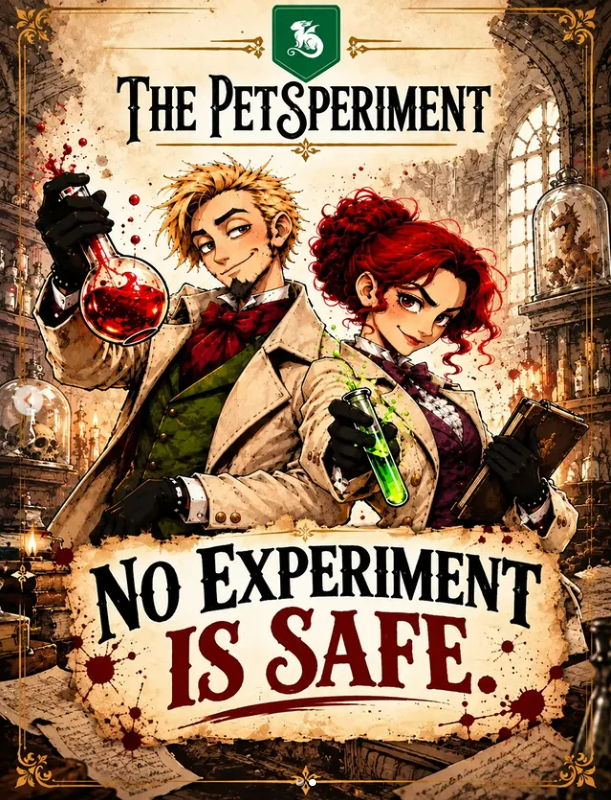

Every scientist has a goal.
Take a board and choose your target Creature. You have a sequence to complete and four Action cards to get you started.

Create your creature before anyone else.
Easy? Sure. Until your friends get their paws involved.

In The Petsperiment, everyone can see your experiment taking shape. While you’re planning your victory, someone else is already planning your next setback.
Take a board and choose your target Creature. You have a sequence to complete and four Action cards to get you started.
Draw an Experiment. If it matches the next Experiment required by your sequence, place it. Then draw an Action and decide whether to play one or pass.
Complete the three Experiments and add a Creature. Is it your target? You win. Is it a different one? Your opponents can still react.
Collect the three Experiments in the order on your board. Here’s a closer look at the new artwork.
Archive effect: instead of drawing an Experiment, move this Experiment from your Archive to your board.
Six possible sequences. One board per player. And that moment when everyone realises you’re one step away from winning.
Boards, Experiment and Action decks, Creatures and Scientists: a real photo of the game.
Tap the photo for a closer look.Innocent eyes. Very unlikely combinations. There are seven different creatures in the deck. Here are two that couldn’t stay hidden.
Found the Experiment you wanted? Wonderful. Let’s see how long it lasts on your Board!
Who could spoil it all?Steal an Experiment. Discard an opponent’s. Swap boards.
Just one Action per turn can change a lot.
Not every card you draw is good news. KAOS, BOOM and Vertigo trigger as soon as they appear. The lab had other plans.
Pick a surpriseAn Event in the Experiment deck. It triggers the moment you draw it. Nobody said the lab was a quiet place.
The base game is complete and can be played without any modules. When you want more possibilities, add the Scientists module, Archive mode or both.
Each player is randomly given one of the 12 Scientists. Each has a different ability, which activates when the required Experiments are on your board.
An Experiment card doesn’t fit your sequence? Keep it in your Archive slot, visible to everyone, instead of discarding it. You can activate its effect later.
27 Experiment cards 8 effects to discover
I’m Nicolò Rocco Alessandro, the game’s creator. I’m looking for a publishing partner to bring this lab to more gaming tables.
The Petsperiment is a competitive card game with direct interaction and plenty of mischief. The base game is easy to learn, with two optional modules that add new possibilities. Visitors have already played it at TO Play in Turin.
If you’re a publisher interested in The Petsperiment, get in touch. We can discuss the game, arrange a playtest and explore a potential collaboration.
Discuss a publishing partnershipthepetsperiment@gmail.comNicolò Rocco Alessandro · CreatorTry the base game on your smartphone and discover how much a match can change when someone gets in your way.
Try the smartphone version